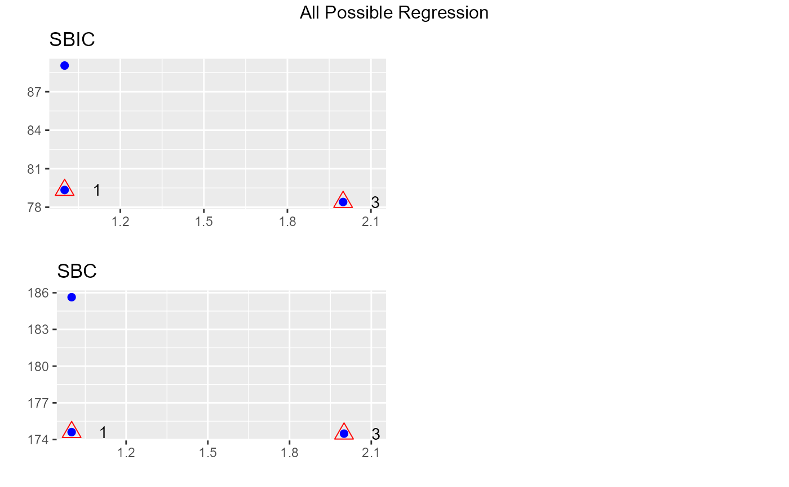
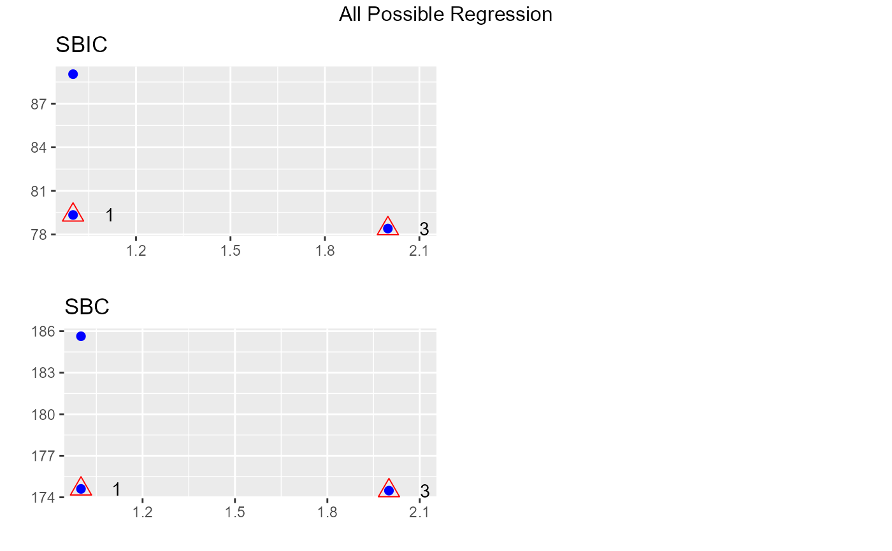

Fits all regressions involving one regressor, two regressors, three regressors, and so on. It tests all possible subsets of the set of potential independent variables.
Usage
ols_step_all_possible(model, ...)
# Default S3 method
ols_step_all_possible(model, max_order = NULL, ...)
# S3 method for class 'ols_step_all_possible'
plot(x, model = NA, print_plot = TRUE, ...)Value
ols_step_all_possible returns an object of class "ols_step_all_possible".
An object of class "ols_step_all_possible" is a data frame containing the
following components:
- mindex
model index
- n
number of predictors
- predictors
predictors in the model
- rsquare
rsquare of the model
- adjr
adjusted rsquare of the model
- rmse
root mean squared error of the model
- predrsq
predicted rsquare of the model
- cp
mallow's Cp
- aic
akaike information criteria
- sbic
sawa bayesian information criteria
- sbc
schwarz bayes information criteria
- msep
estimated MSE of prediction, assuming multivariate normality
- fpe
final prediction error
- apc
amemiya prediction criteria
- hsp
hocking's Sp
References
Mendenhall William and Sinsich Terry, 2012, A Second Course in Statistics Regression Analysis (7th edition). Prentice Hall
Examples
model <- lm(mpg ~ disp + hp, data = mtcars)
k <- ols_step_all_possible(model)
k
#> Index N Predictors R-Square Adj. R-Square Mallow's Cp
#> 1 1 1 disp 0.7183433 0.7089548 4.443792
#> 2 2 1 hp 0.6024373 0.5891853 17.794906
#> 3 3 2 disp hp 0.7482402 0.7308774 3.000000
# plot
plot(k)
 
# maximum subset
model <- lm(mpg ~ disp + hp + drat + wt + qsec, data = mtcars)
ols_step_all_possible(model, max_order = 3)
#> Index N Predictors R-Square Adj. R-Square Mallow's Cp
#> 4 1 1 wt 0.7528328 0.7445939 14.534575
#> 1 2 1 disp 0.7183433 0.7089548 20.469805
#> 2 3 1 hp 0.6024373 0.5891853 40.415867
#> 3 4 1 drat 0.4639952 0.4461283 64.240140
#> 5 5 1 qsec 0.1752963 0.1478062 113.921823
#> 11 6 2 hp wt 0.8267855 0.8148396 3.808191
#> 15 7 2 wt qsec 0.8264161 0.8144448 3.871747
#> 8 8 2 disp wt 0.7809306 0.7658223 11.699275
#> 13 9 2 drat wt 0.7608970 0.7444071 15.146825
#> 6 10 2 disp hp 0.7482402 0.7308774 17.324909
#> 10 11 2 hp drat 0.7411716 0.7233214 18.541329
#> 7 12 2 disp drat 0.7310094 0.7124583 20.290124
#> 9 13 2 disp qsec 0.7215598 0.7023571 21.916283
#> 12 14 2 hp qsec 0.6368769 0.6118339 36.489228
#> 14 15 2 drat qsec 0.5921951 0.5640706 44.178433
#> 25 16 3 drat wt qsec 0.8370214 0.8195594 4.046701
#> 22 17 3 hp drat wt 0.8368791 0.8194018 4.071201
#> 24 18 3 hp wt qsec 0.8347678 0.8170643 4.434529
#> 17 19 3 disp hp wt 0.8268361 0.8082829 5.799467
#> 21 20 3 disp wt qsec 0.8264170 0.8078189 5.871590
#> 19 21 3 disp drat wt 0.7835315 0.7603385 13.251685
#> 16 22 3 disp hp drat 0.7750131 0.7509073 14.717610
#> 18 23 3 disp hp qsec 0.7541953 0.7278591 18.300105
#> 23 24 3 hp drat qsec 0.7442512 0.7168495 20.011366
#> 20 25 3 disp drat qsec 0.7412673 0.7135459 20.524864

# maximum subset
model <- lm(mpg ~ disp + hp + drat + wt + qsec, data = mtcars)
ols_step_all_possible(model, max_order = 3)
#> Index N Predictors R-Square Adj. R-Square Mallow's Cp
#> 4 1 1 wt 0.7528328 0.7445939 14.534575
#> 1 2 1 disp 0.7183433 0.7089548 20.469805
#> 2 3 1 hp 0.6024373 0.5891853 40.415867
#> 3 4 1 drat 0.4639952 0.4461283 64.240140
#> 5 5 1 qsec 0.1752963 0.1478062 113.921823
#> 11 6 2 hp wt 0.8267855 0.8148396 3.808191
#> 15 7 2 wt qsec 0.8264161 0.8144448 3.871747
#> 8 8 2 disp wt 0.7809306 0.7658223 11.699275
#> 13 9 2 drat wt 0.7608970 0.7444071 15.146825
#> 6 10 2 disp hp 0.7482402 0.7308774 17.324909
#> 10 11 2 hp drat 0.7411716 0.7233214 18.541329
#> 7 12 2 disp drat 0.7310094 0.7124583 20.290124
#> 9 13 2 disp qsec 0.7215598 0.7023571 21.916283
#> 12 14 2 hp qsec 0.6368769 0.6118339 36.489228
#> 14 15 2 drat qsec 0.5921951 0.5640706 44.178433
#> 25 16 3 drat wt qsec 0.8370214 0.8195594 4.046701
#> 22 17 3 hp drat wt 0.8368791 0.8194018 4.071201
#> 24 18 3 hp wt qsec 0.8347678 0.8170643 4.434529
#> 17 19 3 disp hp wt 0.8268361 0.8082829 5.799467
#> 21 20 3 disp wt qsec 0.8264170 0.8078189 5.871590
#> 19 21 3 disp drat wt 0.7835315 0.7603385 13.251685
#> 16 22 3 disp hp drat 0.7750131 0.7509073 14.717610
#> 18 23 3 disp hp qsec 0.7541953 0.7278591 18.300105
#> 23 24 3 hp drat qsec 0.7442512 0.7168495 20.011366
#> 20 25 3 disp drat qsec 0.7412673 0.7135459 20.524864